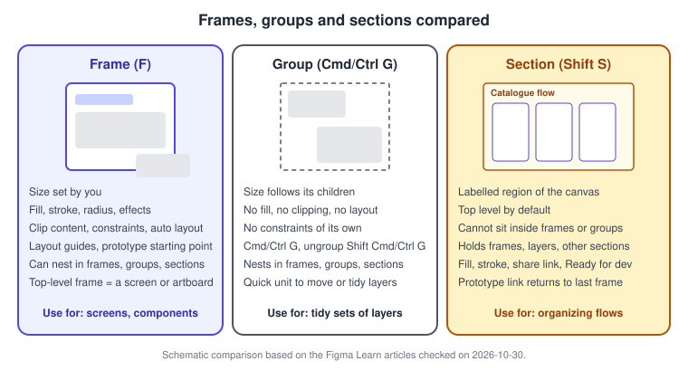
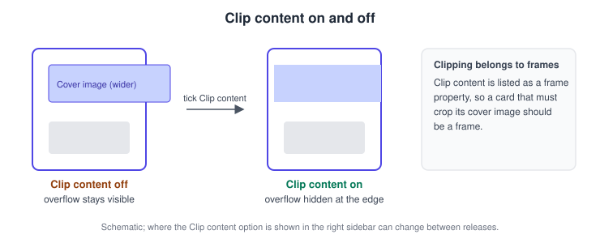
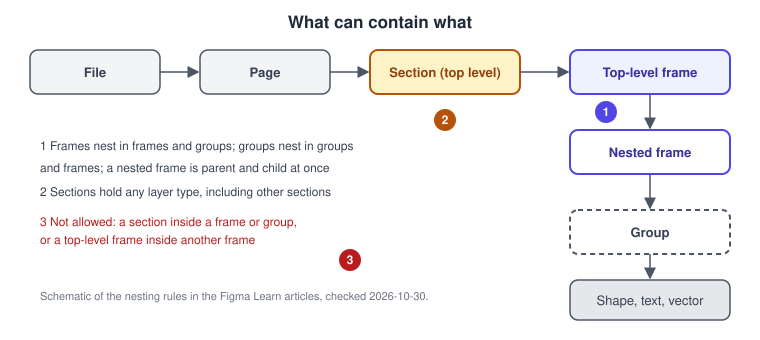
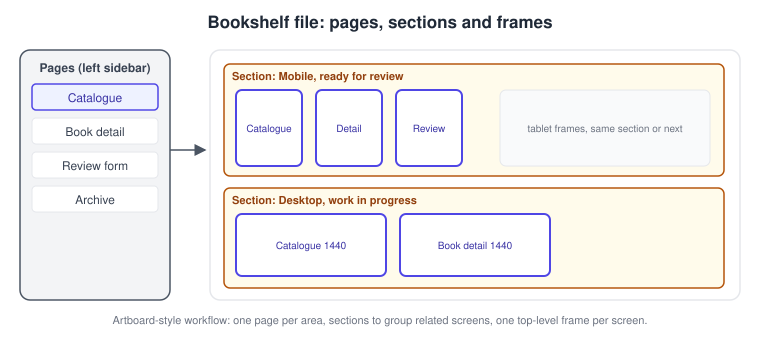
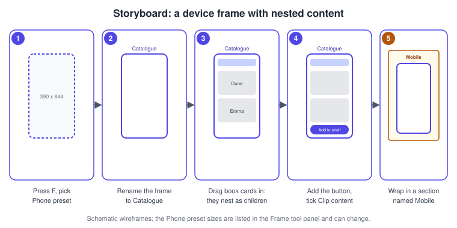

Frames, Groups and Sections
|
This content was generated with the assistance of AI and should be verified against the official documentation before being relied on in production. |
This page was checked against the official Figma documentation on 2026-10-30 and describes the UI3 interface, which is the only interface of Figma Design since the old interface was retired on 2025-04-30. The product is Figma Design, in the browser or the desktop app. According to the Figma Learn articles cited below, frames, groups and sections are available on all plans, and creating or changing them requires edit access to the file, which in practice means a Full seat (see Plans, Seats and AI Credits). All of the features on this page are generally available; none is documented as beta on the checked date.
Frames, groups and sections are the three containers of Figma Design, and pages sit above them. Choosing the right container is one of the first habits to build, because auto layout, constraints, layout guides and prototyping all depend on frames. The running example is Bookshelf, a fictitious book-tracking app: the procedures build a phone-sized Catalogue screen, nest book cards and the "Add to shelf" button inside it, and then organize the screens of the file.
The three containers in one picture
A frame is a layer whose size you set explicitly. A group is a loose bundle whose size follows its children. A section is a labelled region of the canvas used to organize frames and other layers; it is not a screen.

The table summarizes the differences documented on the checked date.
| Aspect | Frame | Group | Section |
|---|---|---|---|
Size |
Set explicitly by you |
Takes the combined dimensions of its children and changes as they move |
Drawn on the canvas as a region |
Create |
Frame tool (F or A), or select layers and use Frame selection |
Select layers, Cmd G (macOS) or Ctrl G (Windows) |
Section tool (Shift S), or right-click and choose Wrap in new section |
Ungroup or remove |
Shift Cmd G or Cmd Delete (macOS); Shift Ctrl G or Ctrl Backspace (Windows) |
Same shortcuts as frames |
Delete removes the section and its contents; Cmd Delete (macOS) or Ctrl Backspace (Windows) removes only the section |
Nesting |
Inside top-level frames, nested frames and groups |
Inside groups, frames and sections |
Top level by default; cannot be placed inside frames or groups; can hold other sections |
Layout features |
Fills, constraints, auto layout, layout guides, prototyping |
None of its own |
Fill, stroke, share link, Ready for dev status |
Frames
A frame is the building block of a screen. A top-level frame sits directly on the canvas (or in a section) and plays the role that an artboard plays in other design tools. A frame placed inside another frame is a nested frame, which is at once a child of its parent and a parent of its own content.
Creating frames
-
Select the Frame tool with F or A, then click the canvas for a default-sized top-level frame or click and drag for a custom size. The first frame of a session is 100 x 100, and later frames reuse the size of the last top-level frame.
-
Click inside an existing frame with the Frame tool to add a 100 x 100 nested frame.
-
To wrap layers that already exist, select them and use Frame selection: Option Cmd G on macOS, Ctrl Alt G on Windows.
-
Duplicate with Cmd D (macOS) or Ctrl D (Windows). With the Frame tool active you can also hover a frame and click the plus handle on either side to add a copy.
Presets
When the Frame tool is active, the right sidebar offers a list of presets, and a selected frame has a Frame dropdown with the same list. The groups documented on the checked date are Phone, Tablet, Desktop, Presentation, Watch, Paper, Social Media, Figma Community and Archive. Changing the preset resizes the frame; children that have constraints resize with it, while the others keep their size and position. The exact device names inside each group change over time, so this page does not list them.
Clip content
Clip content is a frame property that hides child objects extending beyond the frame bounds. Switch it on when a card must crop an oversized cover image or when a scrolling list sits inside a fixed-height area. The Figma Learn article only lists the property, so check the right sidebar of your own file for the control; its position can change between releases.

Resize to fit
Resize to fit shrinks or grows a frame to the outer bounds of its children. Use Option Shift Cmd R on macOS or Alt Shift Ctrl R on Windows, or the resize-to-fit icon in the Layout section of the right sidebar. It is useful after pasting content into a frame that was sized by hand.
Nesting rules
Frames can be placed inside top-level frames, other nested frames and groups. A top-level frame cannot be nested inside another frame, group or object. Sections hold any layer type, including other sections, but a section cannot sit inside a frame or group.

Groups
A group merges layers into one selectable unit. Its size is not set by you: it always hugs its children. The first click on a group selects the whole group, and a double-click (or a click in the layers list) selects a child. Groups can be nested inside other groups, inside frames and inside sections. Because a group has no properties of its own, use it only for loose bundles such as an icon made from several shapes. To give the bundle a fill, constraints or auto layout, convert the idea to a frame with Frame selection.
Sections
A section is a labelled region of the canvas. It sits at the top level by default, can hold frames, groups, shapes and other sections, and cannot be placed inside a frame or group. Sections carry a fill and a stroke, a share link (the Share control in the right sidebar copies a link to the selected section), and a Ready for dev status. After a section is marked Ready for dev, later edits change its status to Changed, and the change is resolved by entering a reason; marking does not lock the content. In prototyping, a connection that targets a section goes to the last frame that was visited in that section.
In Figma Design, sections are about organizing the canvas, not about layout.
Pages
Pages sit above sections and frames. Each page has its own canvas, and you can build separate prototypes on each. The pages list lives in the Files tab of the left sidebar (Option 1 on macOS, Alt 1 on Windows).
-
Add: use the add control in the page list and name the page.
-
Rename: double-click the name, or right-click and choose Rename.
-
Duplicate: right-click and choose Duplicate; the copy is prefixed "Copy of".
-
Reorder: drag the page up or down.
-
Divider: on an empty page, start the name with a hyphen to turn it into a divider.
-
Move layers to another page: right-click the layer and choose Move to page; coordinates and comments are kept.
On the checked date, files in a Starter team are limited to three pages, while Professional, Education and Organization files and drafts allow as many pages as you need. Plan limits change, so confirm them on the official plan pages.
Source: Figma Learn: Pages in Figma
When to use which
-
Use a frame for anything with a size that matters: a screen, a card, a button, a modal. Frames are required for auto layout, constraints, layout guides, clipping and prototype starting points.
-
Use a group for a quick bundle of shapes that you want to move together and that needs nothing else.
-
Use a section to organize screens on the canvas: one section per flow, per platform or per review status.
-
Use a page for a big area of the product, or to separate work in progress from an archive.
A common mistake is stacking groups to imitate a card. The result cannot clip, cannot use auto layout and does not resize with the content. Another is putting each screen in its own section: a section is for several related frames.
Artboard-style workflows
People who come from artboard-based tools can map their habits directly: a top-level frame is the artboard, a page is the document page, and a section is the folder-like region that keeps related artboards together. Older guides describe frames and groups mostly through the old interface and do not cover sections or the Section tool, which arrived after those books were written; they also describe manual frame duplication for breakpoints, which responsive tools replaced (see Masks, Constraints and Layout Guides).

Source: Figma Learn: Pages in Figma
Procedures on the Bookshelf scenario

Create a phone frame for the Catalogue screen
-
Open the Bookshelf Mobile file and go to the Catalogue page.
-
Press F to select the Frame tool.
-
In the right sidebar, open the Phone group of presets and pick a phone size. The frame appears on the canvas.
-
Double-click the frame name above it and type "Catalogue".
Nest the book cards and the button
-
Draw a rectangle for the first book card inside the Catalogue frame; because you start inside the frame, it becomes a child of the frame in the layers list.
-
Select the card and press Cmd D (macOS) or Ctrl D (Windows) to duplicate it, then drag the copy below the first one.
-
Select the two cards and press Cmd G or Ctrl G to group them for a quick move, or press Option Cmd G or Ctrl Alt G to wrap them in a nested frame called "Book list" when you want clipping or auto layout.
-
With the Book list frame selected, tick Clip content in the right sidebar so that long lists do not overflow the screen.
-
Add the "Add to shelf" button as a child of the Catalogue frame with the Frame tool or by pasting it inside.
Organize the screens in a section
-
Select the Catalogue, Book detail and Review form frames.
-
Right-click and choose Wrap in new section, or press Shift S and drag a section around them.
-
Double-click the section title and rename it "Mobile".
-
Use the Fill control in the right sidebar to give the section a pale colour, so it stands out from the canvas.
-
When the screens are final, select the section and mark it Ready for dev.
Add a page for archived work
-
Open the pages list in the Files tab.
-
Add a page, name it "Archive" and drag it to the end of the list.
-
Right-click a retired frame, choose Move to page and pick Archive.
Source: Figma Learn: Pages in Figma
Pitfalls
-
A group does not clip, resize with a layout or accept constraints of its own; convert it to a frame as soon as you need those.
-
Nesting a frame inside a group is allowed but makes the layers list harder to read; prefer frame in frame.
-
A section is not a screen, so prototype flows should start from frames, not from sections.
-
Deleting a section with Delete or Backspace deletes its content too; use Cmd Delete (macOS) or Ctrl Backspace (Windows) to remove only the section.
-
The "ungroup" shortcut is shared between groups and frames, so check the layers list after pressing it.